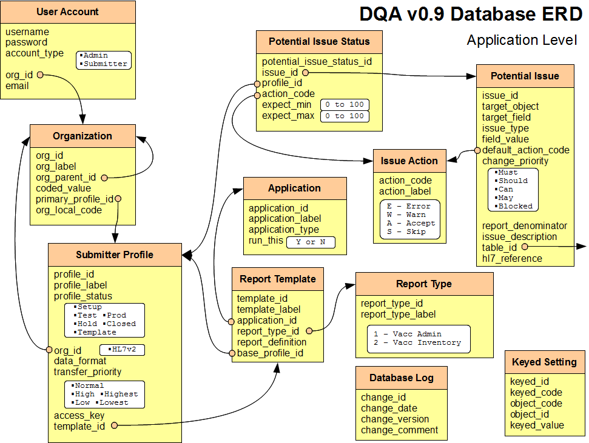
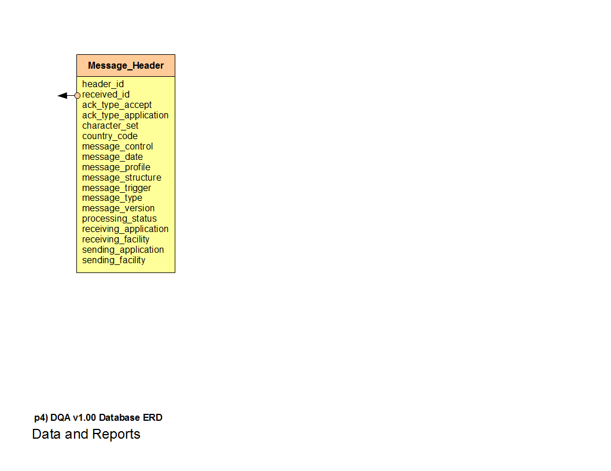
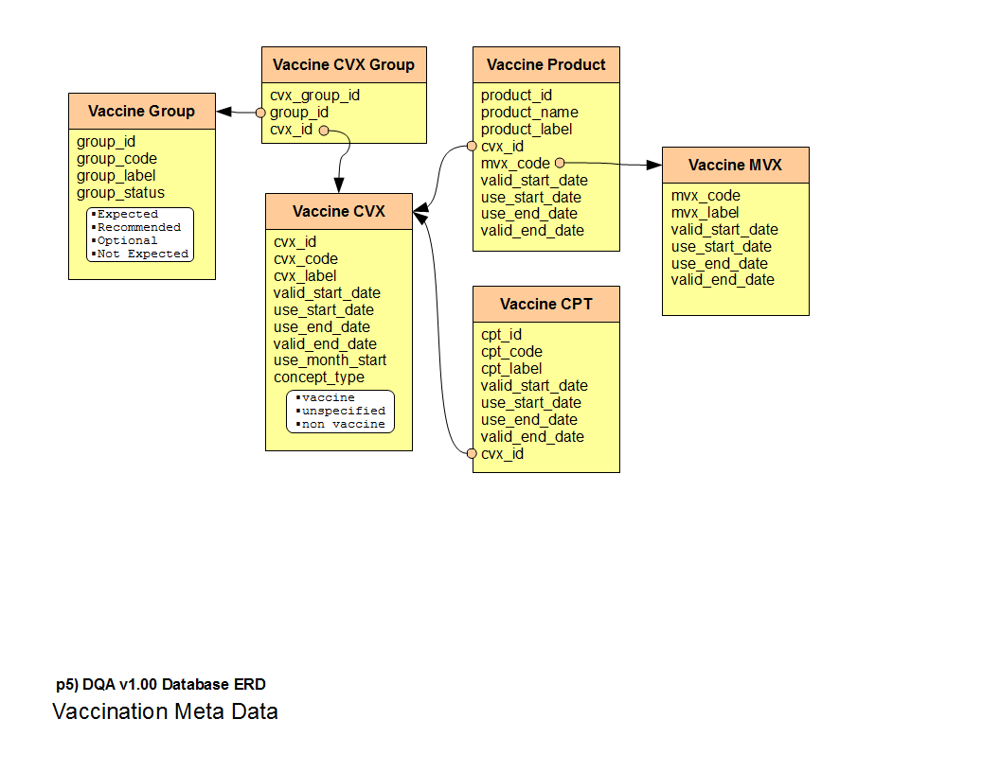

Database ERD v1.08
The latest version of the database ERD can be found here: ERD v1.08.pdf
Complete documentation of all fields needs to be rewritten. Until then the documentation for ERD v1.00 covers nearly 90% of the current database and gives a good grounding in the basic thoughts behind the layout of the database.
Database ERD v1.00
In DQA v1.00 most of the DQA functionality is hidden unseen in the database structure. A thorough understanding of the DQA database design will allow a user to make full use of the functionality. In later versions the DQA will expose the data and control available in the database design.
Database Tables
- Application
- Batch Actions
- Batch Code Received
- Batch Issues
- Batch Report
- Batch Report
- Batch Type
- Batch Vaccine CVX
- Code Master
- Code Received
- Code Status
- Code Table
- Database Log
- Issue Action
- Issue Found
- Keyed Setting
- Message Batch
- Message Header
- Message Received
- Next of Kin
- Organization
- Patient
- Potential Issue
- Potential Issue Status
- Receive Queue
- Report Template
- Report Type
- Report Vaccine Group
- Submit Status
- Submitter Profile
- User Account
- Vaccination
- Vaccine CPT
- Vaccine CVX
- Vaccine CVX Group
- Vaccine Group
- Vaccine MVX
- Vaccine Product
ERD Diagrams
How to read the following diagrams:
- Each table name beings with DQA_ and is followed by the name separated by underscores. The DQA diagram shows the tables names in an easier to read format. The table titled "User Account" represents the database table DQA_USER_ACCOUNT.
- The arrows point from a database foreign key to a table that it references.
- Most arrows terminate on the table, but others are separated on different pages. These arrows point to the left or right indicating that the object referred to lies on a different page.
- The columns are listed below in their logical order.
- Columns with defined discrete values have them listed in white insets. This is for simplicity in reading the diagram.
Application Level - ERD Page 1
User Account
Contains a list of users that can access the DQA. Currently only used to authorize the admin user who can access the configuration user interface.
- username The username that identifies the DQA user.
- password The password (currently in plain text) that can be used to authenticate the DQA user.
- account_type The type of user this account represents. Valid values 'Admin' or 'Submitter'.
- org_id Refers to organization this user is associated with.
- email The email address of the user.
Organization
Represents a single reporting entity. The DQA was not built to model every organizational structure that exists, but rather a simple hierarchy that applies for submitting entities. As of version 1.00 this is not depended on for specific logic.
- org_id Unique id, managed by database. Oracle uses
SEQUENCE dqa_organization_id_sequence INCREMENT BY 1 START WITH 100 - org_label Short, human readable description.
- org_parent_id Reference to organization this belongs to. The base organization is the immunization registry and this organization refers to itself. This field is required.
- coded_value This field is no longer used, as it has been replaced by org_local_code. It will be removed in future DQA versions.
- primary_profile_id The submitter profile that this organization is associated to by default. The DQA supports assigning more than one profile to a single submitting organization but normally an organization will have one profile.
- org_local_code The external id for this organization. This would normally be an id assigned by the IIS.
Submitter Profile
A submitting organization sends data and it is classified under a profile. The profile contains settings, characteristics, status, and reports associated with this imported data. Normally an submitting organization would only have one profile, but others would be defined if the organization sends data from more than one system or one account is dedicated for testing.
- profile_id Unique id, managed by database. Oracle uses
SEQUENCE dqa_profile_id_sequence INCREMENT BY 1 START WITH 1200
When submitting realtime this is indicated using FACILITY_ID field.- 1..100 Reserved for MASTER submitter profiles. Master profiles are templates that are recognized by DQA.
- 101..250 Reserved for TEST submitter profiles, used by DQA centrally for software quality testing.
- 251..1199 Reserved for pre-defined templates defined by DQA centrally.
- 1200.. Open for all profiles defined by local DQA instance.
- profile_code Unique code for profile assigned by the IIS. This is an external value and is an alternate key for this profile.
- profile_label Short, human readable description.
- profile_status Indicates how this profile should be handled.
- Setup Profile has been created but not configured, currently not used by DQA. Will be used when UI is in place and user has begun process to define the profile but has not yet finished.
- Test Profile has been configured and is ready to receive messages, but the data has not been approved to move towards production.
- Prod Profile is approved by IIS to go to production. Data received will be sent to the IIS.
- Hold Profile has been temporarily stopped so data does not move into production.
- Closed Profile is no longer active, can not receive data, and does not participate in reporting activities.
- Template Profile is not used for regular submissions, but rather serves as a template for new submission profiles.
- org_id Indicates organization that this submission profile is assigned under.
- data_format The format of the data being accepted. In version 1.00 the DQA only supported HL7
version 2 messages.
- HL7v2 Health Level Seven version 2.x messages.
- transfer_priority Indicates the level of quality and status for processing. Higher priority
messages may be processed sooner. Can be used to prioritize export batches.
- Normal
- High
- Highest
- Low
- Lowest
- access_key Auto generated code that is the "password" for this profile and should be sent in the PASSWORD field on the real time interface.
- template_id References report template that should be used when generating DQA reports for this profile.
Potential Issue Status
Indicates the specific status for a given profile and potential issue. This table allows for setting the error/warning/accept/skip status for a specific issue for a specific profile. When creating a new profile the DQA populates this table based on the defaults defined by the base profile associated with the report template. In version 1.00 there is no UI to change potential issue status, but changing it in the database will affect the specific profile.
- potential_issue_status_id Unique id, managed by database. Oracle uses
SEQUENCE dqa_potential_status_id_seq INCREMENT BY 1 START WITH 1 - issue_id References potential issue.
- profile_id References submitter profile.
- action_code Indicates the type of action that the DQA should take when an issue is encountered.
- expect_min Indicates the minimum percentage that this issue is expected to occur. Value is an integer valued from 0 to 100. The DQA does not currently act on this value.
- expect_max Indicates the maximum percentage that this issue is expected to occur. Value is an integer valued from 0 to 100. The DQA does not currently act on this value.
Application
Represents different installed versions of the DQA. While only one application can run at a time, this allows for dynamically reconfiguring DQA to run as any available application.
- application_id Unique id, managed externally in ERD spreadsheet.
- application_label Short, human readable description.
- application_type A modifier of the application label to indicate a specific use for this application, such as Test or Prod.
- run_this Indicates whether this is the currently selected application.
- Y Only one record should be marked as Yes.
- N All other records should be marked as No.
- primary_template_id Indicates the report template that should be used by default by the DQA. This is used in situations where the DQA automatically creates a submitter profile, such as when reading FTP folders. In future versions of the DQA, the user will select the template from a list of available templates when creating a new profile.
Report Template
Represents the settings for a DQA report that may be run on a submitting profile. For version 1.00 most applications will run only one type of DQA report for all import profiles. In the future, when many different kinds of interfaces are developed, DQA reports may be created to represent the characteristics expected for particular sets of interfaces. (For example, the DQA report template for a birthing hospital may be different than one for a family practice.)
- template_id Unique id, managed by database. Oracle uses
SEQUENCE dqa_template_id_sequence INCREMENT BY 1 START WITH 1200 - template_label Short, human readable description.
- report_type_id Indicates which broad cross-application category this report belongs to.
- report_definition An XML document that describes the structure and weights of the DQA report.
- base_profile_id References submitter profile.
Issue Action
Represents the type of actions that can be taken for a given issue.
- action_code Unique id, managed externally in ERD spreadsheet.
- E Error issue indicates that the message should be rejected. Message will be rejected if at least one error issue is identified.
- W Warning issue indicates that there is a condition in the message that should be reviewed as a possible problem. Warnings do not cuase messages to be rejected.
- A Accept issue indicates that the issue is expected and acceptable, they are not highlighted or mentioned.
- S Skip issue indicates that the issue should remove a message, or part of a message from processing. For example, if the patient is over the age accepted by the IIS, a skip could be used to not process over-aged patients and their vaccinations and still not generate an error. A skip may also be used at the vaccination level to indicate that a specific vaccination should not be processed. For example, a known non-immunization even could be quietly skipped using this action.
- action_label Short, human readable description
Potential Issue
Represents the total set of possible issues that the DQA is sensitive to. In version 1.00 not all issues have been implemented. The most important and crucial issues are implemented, the other were not because (1) implementation requires a large amount of effort or (2) the issue is a low priority issue. Eventually all issues will be implemented as improvements are made.
- issue_id Unique id, managed externally in ERD spreadsheet.
- target_object The base object that the issue is associated with. For example: Patient, Vaccination
- target_field The field within the base object. For example: Name First, Admin Code
- issue_type The type of issue given a certain field. For example: is missing, is invalid, is valued as
- field_value The value of the field, used for certain specific value checks. For example: A, D
- default_action_code The default action to take. The use of this field has effectively been replaced by the action_code indicated in the potential_issue_satus field. References issue action.
- change_priority Indicates the level of importance for the user to change this issue. Some issues
can not be adjusted by the user, for example if an HL7 message is missing the PID segment, where the patient id
and demographics are, the DQA has to indicate an error as it can not be processed. These issues can not be
adjusted. Others are often adjusted, for example some sites may be required to always send VFC information and
others not. Other issues are rarely adjusted. This status indicates the likely hood that an issue will need to
be addressed so that the UI can put the most important configuration issues on top.
- Must This issue needs to be adjusted during the profile creation process to ensure that the issue is set correctly.
- Should This issue should be adjusted during the profile creation process, or later when reviewed.
- Can This issue may be changed, but normally would not be reviewed.
- May This issue may be changed, but would not be normally displayed in the normal process of editing a profile.
- Blocked This issue may never be changed.
- report_denominator The virtual object that this issue is triggered for. Some issues are triggered for every message/patient, others are triggered for every vaccination or every administered vaccination. This value allows the DQA report to give a realistic percentage for this issue.
- issue_description The human readable description for this issue. Not currently well populated. The display text for the issue is always the concatenation of target_object, target_field, issue_type, and field_value (with the appropriate spaces between). This display text is both controlled and human readable. This is why this field has not been used much yet. In the future this field will probably be filled in with more detail.
Report Type
Represents the general category for this report. This is so reports from different applications can be grouped in similar categories. These categories are expected to grow as the DQA is used to test different kinds of data sources.
- report_type_id Unique id, managed externally in ERD spreadsheet.
- report_type_label Human readable description.
Database Log
Represents comments that were made during upgrades to the DQA database. This can be used to track changes made and also to determine the current version of the database. The latest updated row, with the largest change id is the one considered to indicate the current version of the database.
- change_id unique key to row
- change_date date/time change was made locally
- change_version the DQA version this change belongs to
- change_comment log of change made
Report Vaccine Group
Represents a vaccine group that may appear on the DQA report. In version 1.0 this is not used, but in the future this will be used to indicate for this template what vaccinations are expected to be administered. This will allow for creating a list of vaccinations that are expected to be seen from a particular submitter. At this point the DQA report XML defines the vaccine groups globally as DQA users are currently not making profile-by-profile changes.
- report_vaccine_group_id Unique id, managed by database. Oracle uses
SEQUENCE dqa_report_vac_group_id_seq INCREMENT BY 1 START WITH 1 - group_id References vaccine group.
- profile_id References submitter profile.
- group_status Indicates how a vaccination in this group should be classified.
- Expected The vaccination is expected to show up at once in a given batch, every time. For example: DTap
- Recommended The vaccination should show up at once in a given batch, but may not always be present.
- Optional The vaccination is sometimes given, but may or may not be submitted. For example: Zoster
- Not Expected The vaccination is specifically not expected to be sent. For example: Anthrax
Keyed Setting
Represents a specific setting tied to a key and an object. This is used for cascading settings. If no value is set then the application will pick a default.
- keyed_id Unique id, managed by database. Oracle uses
SEQUENCE dqa_keyed_id_sequence INCREMENT BY 1 START WITH 1 - keyed_code Unique that identifies the specific setting. This is unique for given object_code and object_id.
- object_code The type of object this setting is associated with. The base object is 'Application'.
- object_id The id of the object. For an 'Application' object_code the id is the application_id.
- keyed_value The value that this setting has.
Core Validation - ERD Page 2

Batch Issues
Represents a summary of issues found for the associated batch. This table includes all issues identified in the batch of messages, even those that have A : Accept as a value.
- batch_issues_id Unique id, managed by database. Oracle uses
SEQUENCE dqa_batch_issue_sequence INCREMENT BY 1 START WITH 1 - batch_id References message batch.
- issue_id References potential issue.
- issue_count Number of times issues was identified in batch of records.
Batch Actions
Represents a summary of actions taken on messages in the associated message batch.
- batch_actions_id Unique id, managed by database. Oracle uses
SEQUENCE dqa_batch_action_sequence INCREMENT BY 1 START WITH 1 - batch_id References message batch.
- action_code References issue action.
- action_count Number of times action was taken in the associated message batch.
Batch Vaccine CVX
Represents a summary of vaccinations identified and resolved to a known CVX code. This differs from Batch Code Received in that a submission that includes CPT and not CVX will still be reprsented here in this table. The DQA validation process resolves the codes sent to a single CVX code which is the source of counts here. In this way this table may be used to tally the concepts received without regard to the actual code set used. To see counts of what was actually received see the Batch Code Received table.
- batch_vaccine_cvx_id Unique id, managed by database. Oracle uses
SEQUENCE dqa_batch_vaccine_cvx_sequence INCREMENT BY 1 START WITH 1 - batch_id References message batch.
- cvx_id References vaccine cvx.
- received_count The number of vaccinations received that either used this CVX code or were mapped to this CVX code.
Batch Report
This is shown on Page 2 of the ERD in order to show how it relates. The full batch report table is shown on page 3.
Receive Queue
Links the received message into a particular batch. Each received message may be associated with one or more batches. Typically a message is first associated with a 'Submission' batch and then at the end of the week to a 'Weekly' batch. At this point the message is considered to be both part of a 'Submission' batch and the 'Weekly' batch. This table makes this possible.
- receive_queue_id Unique id, managed by database. Oracle uses
SEQUENCE dqa_receive_queue_id_sequence INCREMENT BY 1 START WITH 1 - batch_id References message batch.
- received_id References message received.
- submit_code References submit status.
Message Batch
Represents a set of messages that have been grouped together under a particular critiera. For example, all messages that were submitted together in a single file, or all messages that were submitted within a week and are not ready for import into the IIS. Each message batch has associated tables that support the DQA report.
- batch_id Unique id, managed by database. Oracle uses
SEQUENCE dqa_batch_id_sequence INCREMENT BY 1 START WITH 1 - batch_title Title assigned to batch. Currently this is automatically assigned. In the future the user may be able to specify the title for one-off batches.
- type_code References batch type.
- start_date The start date/time when the batch starts. Other selection criteria may also apply and so this date range does not imply that all messages submitted within the range are necessarily included.
- end_date The end date/time when the batch ends. Other selection criteria may also apply and so this date range does not imply that all messages submitted within the range are necessarily included.
- submit_code References submit status.
- profile_idReferences submitter profile
Batch Type
Indicates the type of batch.
- type_code
- S Submission - Batch file is a collection of records that were submitted together, for example as a file.
- D Daily - Batch file is a collection of records that were submitted on the same day.
- W Weekly - Batch file is a collection of records that were submitted in the same week.
- M Monthly - Batch file is a collection of records that were submitted in the same month.
- O Other- Other criteria was used to
- type_label
Batch Code Received
Represents a summary of the codes received in this batch. Every coded value that is received is represented in this table. If the code value is not received it is not listed here.
- batch_code_received_id Unique id, managed by database. Oracle uses
SEQUENCE dqa_batch_code_rec_sequence INCREMENT BY 1 START WITH 1 - batch_id References message batch.
- coded_id References code received.
- received_count The number of times that this coded value was received.
Message Received
Represents a single message that has been submitted. Every submitted message that is from an authorized submitter will be recorded here, even if the message has errors. (Unauthorized users are rejected from sending data into DQA and that data is never stored.)
- received_id Unique id, managed by database. Oracle uses
SEQUENCE dqa_message_received_sequence INCREMENT BY 1 START WITH 1 - profile_idReferences submitter profile
- received_date The date the message was received.
- request_text The originally submitted text of the message.
- response_text The acknowledgement generated and made immediately avaialable to the sender.
- action_code References issue action.
- submit_code References submit status.
Submit Status
Represents the status of a message or batch in being exported and submitted to the IIS. This table only applies when the DQA is setup to export data out.
- submit_code Unique id, managed externally in ERD spreadsheet.
- E Excluded - The message or batch has been excluded because of an error or other issue. This data will not be exported to the IIS.
- Q Queued - The message or batch are ready to be included in a batch that could be exported to the IIS.
- H Hold - The message or batch has been flagged for holding for future review. Could eventually be imported if indicated as such.
- P Prepared - The message or batch have been pulled off the queue, placed in a submission batch, and are ready for export to the IIS.
- S Submitted - The message or batch has been exported for import into the IIS.
- submit_label
Code Table
Represents all the tables that are supported for mapping.
- table_id Unique id, managed externally in ERD spreadsheet.
- table_label Short, human readable description of table.
- default_code_value The default value that is used when an invalid value is submitted for a table.
Code Master
An authoritative list of all the known valid values for the Code Tables. These are the values defined by state and local standards.
- code_master_id Unique id, managed by database. Oracle uses
SEQUENCE dqa_code_master_id_sequence INCREMENT BY 1 START WITH 1 - table_id References code table.
- code_value The value that is expected to be received.
- code_label Short, human readable description.
- use_value The value that should actually be used. This is good for supporting deprecated values.
- code_status References code received.
Issue Found
Represents and identifies that an issue was found when looking at a message received. Every message received normally has a hundred or so issue. Not all issues are errors, and many are expected during normal operation.
- issue_found_id Unique id, managed by database. Oracle uses
SEQUENCE dqa_issue_found_id_sequence INCREMENT BY 1 START WITH 1 - received_id References message received.
- issue_id References potential issue.
- position_id Indicates the position within a repeating element. For example, if the issue is 'Vaccination Date is invalid', this number represents which RXA to look at to find the issue.
- action_code References issue action.
- code_id References code received.
Code Received
Represents an actual code value received for a particular submitter profile. The DQA records all code values received, valid or not, recognized or not recognized in this table. In this way it is easy to see exactly what codes are being send and which are not for a particular submitting profile.
- coded_id Unique id, managed by database. Oracle uses
SEQUENCE dqa_code_id_sequence INCREMENT BY 1 START WITH 1000 - code_label Short, human readable description of code. This is the description supplied in the message, if available. For example, if this is the vaccination admin code then the label would be the value in RXA-5.2.
- profile_id References submitter profile.
- table_id References code table.
- received_value Indicates the value that was sent, as it was.
- code_value Indicates the value this was mapped to.
- code_status References code received.
- received_count Indicates the number of times this code value has been received. This value can be reset and so is only used to help troubleshoot issues and for general tracking.
Code Status
Represents the current state of a code received or code master value.
- code_status
- V Valid - The code is a known value and is valid for use.
- I Invalid - The code is recognized and known to be unacceptable value.
- U Unrecognized - The code is not recognized, may or may not be valid if mapped correctly.
- D Deprecated - The code is recognized, but has been replaced by a more correct value that should be used instead.
- G Ignored - The code indicates that the parent object should be skipped. To actually skip the issue associated with this condition has to indicate skip. By default most profiles are setup this way, but they can be changed on an issue by issue basis.
- code_label
Data and Reports - ERD Page 3

Batch Report
Represents the summary data that makes the bulk of the official DQA report. This information is stored here in detailed level in order to support aggregate analysis of all DQA reports generated. For details on how each of these fields are calculated, please see the instructions on how to read a DQA report.
- batch_report_id Unique id, managed by database. Oracle uses
SEQUENCE dqa_batch_report_id_sequence INCREMENT BY 1 START WITH 1 - batch_id References message batch.
- comp_patient_score Completion patient score: score for completion level of patient data fields.
- comp_score Completion score: score for completion level of all message data fields.
- comp_vaccination_score Completion vaccination score: score fo the completion level of vaccination data fields.
- message_count Message count: the number of messages received in this batch.
- message_with_admin_count Message with administrations count: the number of messages with at least one administered vaccination.
- next_of_kin_count Next-of-kin count: the total number of next-of-kins identified.
- overall_score Overall score: the overall DQA score given to this batch.
- patient_count Patient count: the number of patients found in the batch. Normally this should match the message_count value.
- patient_under_age_count Patient under-age count: the number of patients who are considered minors by the DQA and therefore should contain guardian or responsible party information.
- qual_error_score Quality error score: the score given indicating if the level of errors is within the expected range or not.
- qual_score Quality score: the score given to indicate the general level of quality, considering both errors and warnings.
- qual_warn_score Quality warning score: the score given to indicate the leve of warnings is within the expected range or not.
- time_average Timeliness average days: The average number of days it took for messages with administrated vaccinations to be submitted. Measuring from the latest administered vaccination date to the date of receiving the message.
- time_count_early Timeliness count of early reports: The number of messages that arrived earlier than the configured on-time window.
- time_count_on_time Timeliness count of on-time reports: The number of messages that arrived within the configured on-time window.
- time_count_late Timeliness count of late reports: the number of messages that arrived after the configured on-time window but before being considered very late.
- time_count_very_late Timeliness count of very late reports: the number of messages that arrived after the configured late window.
- time_count_old_data Timeliness count of old data: the number of messages that have vaccinations that are much later than expected and represent vaccination reports of events that happened quite a while ago. (Indicates stale or old data.)
- time_date_first Timeliness date first: the date and time of the first administered vaccination. (Only considering the latest administered vaccination in each message. Earlier vaccinations in the same message are ignored.)
- time_date_last Timeliness date last: the date and time of the last administered vaccination. (Only considering the latest administered vaccination in each message. Earlier vaccinations in the same message are ignored.)
- time_score Timeliess score: the overall score indicating how timely this batch was.
- time_score_early Timelines score of early reports: score given for records submitted early. (extra credit)
- time_score_on_time Timeliness score for on-time reports.
- time_score_late Timeliness score of late reports.
- time_score_very_late Timeliness score for very late reports.
- time_score_old_data Timeliness score for old data.
- vacc_admin_count Vaccination administration count: the number of vaccinations indicated as being administered.
- vacc_delete_count Vaccination deleted count: the number of reported deletions. (If one vaccination is deleted twice, this counts in this measure both times.)
- vacc_historical_count Vaccination historical count: the number of vaccinations indicated as historical.
- vacc_not_admin_count Vaccination not administered count: the number of vaccinations indicated as not administered for whatever reason. (Could indicate a refusal, contraindication or other special condition. )
Patient
Represents the patient data received. Special notice should be given that this table is similar to a Patient table that may be found within an IIS, but should not be thought of as serving the same purpose. The key difference is that this table can have null or empty values where normally the IIS would not and that there is no attempt to merge duplicate patient information. For example a patient record may have no name and still be listed here, and if the patient is submitted more than once that information will be entered in different rows of this table. This is because this table does not represent a consolidated patient record but rather the record that was received by the DQA at one time. For this reason this table puts very little constraint about what data is populated and allows for a wide range of valid and no-valid values.
- patient_id Unique id, managed by database. Oracle uses
SEQUENCE dqa_patient_id_sequence INCREMENT BY 1 START WITH 1 - received_id References message received.
- skipped Indicates if this message should be skipped because an issue at the patient level indicated a skip.
- address_city
- address_country
- address_county_parish
- address_state
- address_street
- address_street2
- address_type
- address_zip
- alias_first
- alias_last
- alias_middle
- alias_prefix
- alias_suffix
- alias_type_code
- birth_date
- birth_multiple
- birth_order
- birth_place
- death_date
- death_indicator
- ethnicity_code
- facility_id
- facility_name
- financial_elgibility
- financial_elgibility_date
- id_medicaid
- id_ssn
- id_submitter_assign_auth
- id_submitter_number
- id_submitter_type_code
- mother_maiden_name
- name_first
- name_last
- name_middle
- name_prefix
- name_type_code
- phone_number
- physician_name_first
- physician_name_last
- physician_number
- primary_language_code
- protection_code
- publicity_code
- race_code
- registry_status
- sex_code
Next of Kin
Represents a parent, associated party, next of kin, responsible party, or guardian that has been included with the patient data.
- next_of_kin_id Unique id, managed by database. Oracle uses
SEQUENCE dqa_next_of_kin_id_sequence INCREMENT BY 1 START WITH 1 - received_id References message received.
- position_id Indicates the position within the original message this next-of-kin appeared, starting at position 1.
- skipped Indicates if this next-of-kin should be skipped and not processed. This occurs if at least one of the issues encountered signals a skip.
- address_city
- address_country
- address_county_parish
- address_state
- address_street
- address_street2
- address_type
- address_zip
- name_first
- name_last
- name_middle
- name_prefix
- name_suffix
- name_type_code
- phone_number
- relationship_code
Vaccination
Represents a submitted vaccination. Please note that this table is a corollary with similar tables in most IIS, but is has important differences. This table contains all data received and may be missing required fields. Also, data is not deduplicated and represents a copy of every report received without any merging The DQA can merge data before exporting but does not do that at this point.
- vaccination_id Unique id, managed by database. Oracle uses
SEQUENCE dqa_vaccination_id_sequence INCREMENT BY 1 START WITH 1 - received_id References message received.
- position_id Indicates the position with the original message as this vaccinatino appeared, starting at position 1.
- skipped Indicates if this vaccination should be skipped and not processed. This occurs if at least one of the issues encountered signals a skip.
- admin_code_cpt
- admin_code_cvx
- admin_date
- amount
- amount_unit_code
- body_route_code
- body_site_code
- completion_status_code
- confidentiality_code
- entered_by_number
- entered_by_name_first
- entered_by_name_last
- expiration_date
- facility_id
- facility_name
- financial_eligibility_code
- given_by_number
- given_by_name_last
- given_by_name_first
- id_submitter
- information_source_code
- lot_number
- manufacturer_code
- order_control_code
- ordered_by_number
- refusal_code
- system_entry_date
- vis_publication_date
Data and Reports - ERD Page 4
Message Header
Represents the message header information received. If the message was not in HL7 format many of these fields will not have values.
- header_id Unique id, managed by database. Oracle uses
SEQUENCE dqa_header_id_sequence INCREMENT BY 1 START WITH 1200 - received_id References message received.
- ack_type_accept
- ack_type_application
- character_set
- country_code
- message_control
- message_date
- message_profile
- message_structure
- message_trigger
- message_type
- message_version
- processing_status
- receiving_application
- receiving_facility
- sending_application
- sending_facility
Vaccination Meta Data - ERD Page 5
Vaccine Group
Represents a grouping of vaccinations that contain a common component that targets a specific disease. This is used to group vaccines together that are similar for reporting purposes and to determine if reports of expected vaccinations are being received.
- group_id Unique id, managed externally in ERD spreadsheet.
- group_code Unique, human readable code, managed externally by CDC.
- group_label Short, human readable description.
- group_status Default status of vaccine group for DQA report. Not used at this point, for general
reference only.
- Expected The vaccination is expected to show up at once in a given batch, every time. For example: DTap
- Recommended The vaccination should show up at once in a given batch, but may not always be present.
- Optional The vaccination is sometimes given, but may or may not be submitted. For example: Zoster
- Not Expected The vaccination is specifically not expected to be sent. For example: Anthrax
Vaccine CVX Group
Joins the Vaccine Group to a Vaccine CVX concept. A CVX code can belong to more than one group.
- cvx_group_id Unique id, managed by database. Oracle uses
SEQUENCE dqa_cvx_group_id_sequence INCREMENT BY 1 START WITH 1 - group_id References vaccine group.
- cvx_id References vaccine cvx.
Vaccine CVX
- cvx_id Unique id, managed externally in ERD spreadsheet.
- cvx_code Unique code, managed externally by CDC.
- cvx_label Short, human readable description, defined by CDC.
- valid_start_date Date when this vaccination began to be administered anywhere.
- use_start_date Date when this vaccination began to be administered routinely. (Licensed in the US.)
- use_end_date Date when this vaccination stopped being routinely administered.
- valid_end_date Date when this vaccination was no longer administered anywhere.
- use_month_start The first month of the patients life that this vaccination can be administered.
- use_month_end The month of the patients life where it is too late to administer a vaccination. (Note: this month indicates that administering a vaccination after this date is unexpected and invalid and most likely repesents a data quality issue. Do not use the ACIP recommendations for healthy children as the sole criteria as their are cases with some vaccinations were high-risk children are given vaccinations beyond the normal time envelope. These dates are to catch uses that are most positively not correct. Finer validation, using a vaccination forecaster will ocurr at a later point. )
- concept_type
- vaccine Indicates that this CVX code represents a real vaccination given to patients.
- unspecified Indicats that this CVX code is generic and does not indicate enough information to report an administered vaccination. This code is retained for reporting historical vaccinations.
- non vaccine Indicates that this CVX code represents a non-vaccination event, either a non-vaccination pharmaceutical or a non-administration code such as 999 or 998. /li>
Vaccine Product
Represents a specific vaccine product with its generic name. This table joins the manufacturer and a specific vaccine.
- product_id Unique id, managed externally in ERD spreadsheet.
- product_name Short, human readable name for product.
- product_label Short, human readable label for product.
- cvx_id References vaccine cvx.
- mvx_code References vaccine mvx.
- valid_start_date Date when this vaccine product began to be administered anywhere.
- use_start_date Date when this vaccine product began to be administered routinely. (Licensed in the US.)
- use_end_date Date when this vaccine product stopped being routinely administered.
- valid_end_date Date when this vaccine product was no longer administered anywhere.
Vaccine CPT
- cpt_id Unique id, managed externally in ERD spreadsheet.
- cpt_code Unique code, assigned by industry, obtained from CDC website, stored in ERD spreadsheet.
- cpt_label Short, human readable label.
- valid_start_date Date when this vaccine product began to be administered anywhere.
- use_start_date Date when this vaccine product began to be administered routinely. (Licensed in the US.)
- use_end_date Date when this vaccine product stopped being routinely administered.
- valid_end_date Date when this vaccine product was no longer administered anywhere.
- cvx_id References vaccine cvx.
Vaccine MVX
Represents a vaccination manufacturer. There is a lot of changes in this area as manufacturers merge and names change. The codes shown here represent their use across time.
- mvx_code
- mvx_label
- valid_start_date Date when this manufacturer concept first started to be used (company started).
- use_start_date Date when this manufacturer's products first started to be routinely used.
- use_end_date Date when this manufacturer's products stopped being regularly used. (The company went out of business, bought by another company, or rebranded and new MVX code assigned.)
- valid_end_date Date when this manufacturer's products were stopped from being used anywhere. (All of the old vaccinations are now used out of current inventories.)